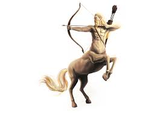
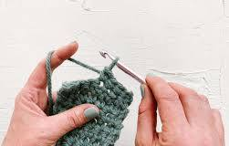
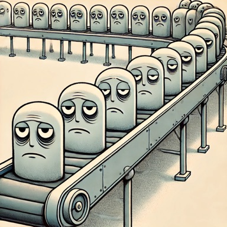
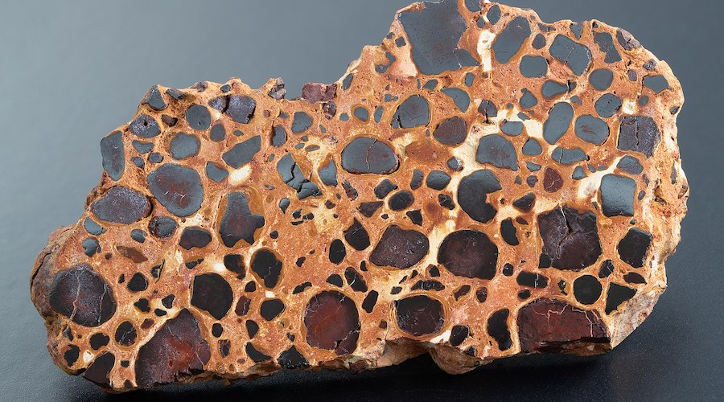
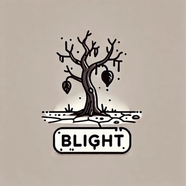
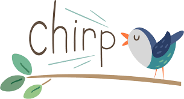

apiary
['eipjəri]
aviary: n.大鸟笼，鸟舍
lapidary: n. 宝石工，宝石专家
Apia(ɑ:'pi:ɑ:): 阿皮亚[南太平洋岛国西萨摩亚首都]
atheism
['eiθiizəm]
heis(): [医][=high-energy ion scattering]高能离子散射
theis(): [人名] 泰斯
theism('θi:izm): n. 有神论, 一神论, 茶中毒\n[医] 茶中毒
atrophy
['ætrəfi]
trophy: n.奖品，战利品
trophy(['trəufi]): n.奖品，战利品
rophy(): [网络] 罗菲
trop(tro): adv. 太, 太多；过于
trophy('trәufi): n. 战利品, 奖品\nvt. 用战利品装饰
bereft
[bi'reft]
beset: v.镶嵌；困扰
erect: a.竪立的，笔直的，直立的
beet: n. 甜菜

beget: v. 产生，引起
bere(biә): n. 大麦的一种
reft(reft): reave的过去式和过去分词
bracing
['breisiŋ]
bearing: n.关系，意义；方位

craving: n.强烈的愿望
grating: a.(声音)刺耳的；恼人的
acing(): vt. 发球得分（ace的现在分词形式）
cing(): n. 一种数据类型转换函数（用于计算机编程）
racing('reisiŋ): n. 赛马, 赛车\n[机] 空转, 急转
brash
[bræʃ]
abash: v.使害羞，使尴尬
base: a.卑鄙的
bask: v.晒太阳，取暖
blast: >n.一阵(大风)；冲击波；v.爆破；枯萎
blush: v.因某事物脸红；n.因羞愧等脸上泛出的红晕
boast: v./n.自夸
brace: v.使稳固，架稳；n.支撑物
brag: v.吹嘘
braid: n.穗子；发辫；v.编成辫子
brake: n.刹车；v.减速，阻止
brand: n.商标；烙印；v.在某事物上打烙印
brassy: a.厚脸皮的，无礼的
brat: n.孩子；顽童
brawl: v./n.争吵，打架
breach: n.裂缝，缺口；v.打破，裂开；违背
brisk: a.敏捷的，活泼的；清新健康的
broach: v.开瓶；提出(讨论)
clash: v.冲突，撞击
crass: a.愚钝的，粗糙的
erase: v.擦掉，抹去
gash: n.深长的伤口，裂缝
lash: n.鞭子；v.鞭打；捆住
mash: v.捣成糊状
quash: v.镇压；取消
sash: n.肩带
blase: adj. 厌倦享乐的，冷漠的
bray: v. 大声而刺耳地发出（叫唤或声音）
leash: n. (系狗的)绳子
rasp: v. 发出刺耳的声音
stash: v. 藏匿，隐藏
thrash: v. 鞭打
wrath: n. 愤怒，大怒
rash(ræʃ): a. 轻率的, 匆忙的, 鲁莽的\nn. 皮疹
buggy
['bʌgi]
muggy: adj. (天气)闷热而潮湿的
budge: v.移动一点儿；改变立场
bulge: n./v.膨胀，鼓起
bully: v.以强欺弱，威胁；n.欺负别人者
buoy: n.浮标；救生圈；v.支持，鼓励
soggy: a.湿透的
ugly: a.难看的，可怕的
bugg(): [人名] [英格兰人姓氏] 巴格来源于古诺斯语，含义是“胖人”(fat man); [人名] [英格兰人姓氏] 巴格绰号，粗野的或古怪的人，来源于中世纪英语，含义是“妖怪，稻草人”(hobgoblin,scarecrow)
calumny
['kæləmni]
clumsy: a.笨拙的；拙劣的
alum('ælәm): n. 明矾, 矾, 校友\n[化] 明矾; 钾铝明矾
canard
[kæ'nɑ:d]
canary: n.金丝雀；女歌星
candid: a.率直的
coward: n.胆小鬼
hazard: n.危险
anar(): n. (Anar)人名；(土、阿塞、土库)阿纳尔
cana('keinә): n. 迦南（巴勒斯坦北部的一个村庄）
nard(nɑ:d): n. 甘松, 甘松油膏\n[医] 甘松香, 甘松
candid
['kændid]
candor: n.坦白，率直
rancid: a.不新鲜的，变味的
canard: n. 谣言，假新闻
andi(): 安迪（名字）
cand(): [化] 萤石
candi(): n. (Candi)人名；(意)坎迪
centaur
['sentɔ:]
cent(sent): n. 分\n[经] 美分
centa(): 人名；(意)琴塔
taur(): [医][=taurine]氨基乙磺酸, 牛磺酸

clique
[kli:k]
oblique: a.间接的；斜的
pique: n./v.(因自尊心受伤害而导致的)不悦，愤怒；v.冒犯
plaque: n.匾；血小板
unique: a.独一无二的，独特的；无与伦比的
cliche: adj. 陈腐的
coerce
[kəu'ə:s]
coarse: a.粗糙的；低劣的；粗俗的
core: n.果心；核心)；v.去掉某物的中心部份
coterie: n.(有共同兴趣的)小团体
pierce: v.刺透；穿过
congregate
['kɔŋgrigeit]
gate(geit): n. 门, 牌楼, 大门, 通道, 闸\nvt. 装门于\n[计] 门; 栅
greg(greg): n. 格雷格（男子名, 等于Gregory）
rega(): n. 君子（英国音响品牌）；君威（别克的汽车名）
conscript
['kɔnskript]
constrict: v.压缩，收缩
script([skript]): n.剧本，脚本
rip([rip]): v. 撕裂，撕破
crip(krip): n. <美俚>瘸子
scrip(skrip): n. 便条, 纸条, 纸片\n[经] 股票临时收据, 临时凭单, 代价券
script(skript): n. 手迹, 手稿, 正本, 手写体\nvt. 改编为演出本\n[计] 手写体, 小型程序
contend
[kən'tend]
content: a.知足的，满意的；n.内容；满意
consent: v.同意，允许
contented: a.心满意足的
contest: v.竞争；对…表示怀疑
context: n.(语句等的)上下文
convene: v. 集合；召集
portend: v. 预兆，预示
tend([tend]): v.照料，看顾
conte(kuŋt): n. 短篇小说
tend(tend): vi. 走向, 有某种的倾向, 易于, 照顾, 注意\nvt. 照料, 护理
contraband
['kɔntrə`bænd]
ban([bɑ:n]): n.禁令
band([bænd]): n.带子；收音机波段
aban(): n. 波斯历八月
aband(): n. 壹个组合（乐队）
band(bænd): n. 带子, 队, 乐队\nv. 联合, 结合\n[计] 频带; 波段; 区
contra('kɒntrә): n. 反对, 相反\nadv. 反对地, 相反地
Raba(): n. (Raba)人名；(德、意、罗、捷)拉巴；(西)拉瓦
craven
['kreivən]
brazen: a.厚脸皮的
cavern: n.大洞穴
crate: n.篓，板条箱
crater: n.火山口；弹坑
cravat: n.领巾，领结
craving: n.强烈的愿望
crayon: >n.彩色腊笔、粉笔或其绘画
grave: a.严峻的；n.墓穴
gravel: n.碎石，砂砾
haven: n.安息所，避难所
leaven: n.发酵剂；影响力；v.发酵；影响
maven: n.专家，内行
rave: n.热切赞扬；v.狂语
ravel: v.纠缠，纠结；拆开，拆散
使纠缠，变得错综复杂；
riven: a.撕裂的，分裂的
记：ri出纹理 撕裂的
coven: n. (尤指十三个)女巫的集会
rave([reiv]): n.热切赞扬；v.狂语
aven(ә'ven): n. 落水洞
crave(kreiv): v. 渴望, 热望, 恳求
rave(reiv): n. 狂吼, 狂暴\nv. 愤怒地说, 叫嚷, 咆哮
raven('reivn): n. 渡鸦, 掠夺\na. 乌黑的\nv. 掠夺, 狼吞虎咽
crochet
['krəuʃei]
prophet: n.先知，预言家
cachet: n. 赞同的标志，优越的标志；印章；胶囊
crotchety: adj. 脾气坏的
chet(): n. 切特（男人名）
croc(krɔk): n. <口>=crocodile
croche(): n. (Croche)人名；(法)克罗什；(西)克罗切
oche(): （掷镖游戏的）投掷线
Roch(): n. 洛克或罗奇（法人名）
roche(): n. 瑞士罗氏（制药企业）
rochet('rɒtʃit): n. 白色法衣

deluge
['delju:dʒ]
delude: v.欺骗，哄骗
deduce: v.演绎，推断
defuse: v.从(爆破装置)中卸除引信；缓和紧张状态或危急局面
delve: v.深入探究，钻研
denude: v.脱去；剥蚀；剥夺
dilute: v.把(液体)弄稀，弄淡
elude: v.逃避；搞不清
demure: adj. 严肃的，矜持的
depute: v. 派…为代表或代理
lug([lʌg]): v./n.拖，拉
luge(lu:ʒ): n. (竞赛用)的仰卧小雪撬\nvi. 坐小雪橇滑雪
derogate
['derəgeit]
abrogate: v.废止，废除
arrogate: v.冒称具有…权利
decorate: v.装饰某事物
delegate: n.代表；v.委派…为代表，授权
desolate: adj. 荒凉的，被遗弃的
detonate: v. (使)爆炸，引爆
gate(geit): n. 门, 牌楼, 大门, 通道, 闸\nvt. 装门于\n[计] 门; 栅
derogatory
[di'rɔgətəri]
ator(): 实际接收时间（Actual Time Of Reception）
gato(): n. (Gato)人名；(西、葡)加托\n起飞时载油量（=gasoline at take off）
gator('ɡeitә): n. 短吻鳄
rogatory('rɔ^әtәri): a. 查询的,调查的
Tory('tɒ:ri): n. 托利党党员, 保守党员, 亲英分子\na. 保守分子的
dilettante
[`dili'tænti]
tan([tæn]): v.鞣(革)
ante('ænti): n. 赌注\nv. 下赌注
dile(): [医][=drug-induced lupus erythematosus]药物诱发红斑狼疮
Lett(let): n. 列托人, 列托语
letta(): [地名] [喀麦隆] 莱塔
Tante(): n. (Tante)人名；(西)坦特
disabuse
[`disə'bju:z]
disburse: v.支付，支出
abuse([ə'bju:z]): v./n.辱骂; 滥用
abus(): n. 总线；离合器
abuse(ә'bju:s.ә'bju:z): n. 滥用, 虐待, 恶习, 辱骂\nvt. 滥用, 辱骂, 虐待
buse(): [人名] 布斯
disparate
['dispərit]
disparage: v.贬抑，轻蔑
desperate: a.不顾死活的，拼命的
disparity: n.不同，差异
dispar(): [医] 不等的, 不相称的
para('pɑ:rә): [经] 帕拉
rate(reit): n. 比率, 率, 速度, 价格, 费用, 等级\nvt. 估价, 认为, 鉴定等级, 责骂\nvi. 被评价, 责骂
spar(spɑ:): n. 晶石, 圆材, 拳斗, 争论\nvt. 装圆材于\nvi. 拳斗, 争论
disrepute
[`disri'pju:t]
dispute: v.争论
repute([ri'pju:t]): n.名声，名誉
pute(pju:t): a. 单纯的
repute(ri'pju:t): n. 名望, 名气, 声望\nvt. 认为, 以为
distress
[dis'tres]
digress: v.离题
listless: a.无精打采的
stress(stres): n. 压力, 紧迫, 强调, 重音, 重点, 应力\nvt. 加压力于, 着重, 重读
tres(tres): a. 三（等于three）
tress(tres): n. 一绺头发, 头发, 发辫
ecdysis
['ekdisis]
eclectic
[ek'lektik]
lect(): comb. 选；收
ecstatic
[eks'tætik]
static: a.静态的，呆板的
static(['stætik]): a.静态的，呆板的
stat(stæt): [电] 静
static('stætik): n. 静电, 静电干扰\na. 静态的, 静止的, 固有的, 静电的
tati(): n. (Tati)人名；(法、刚(布)、意、印尼)塔蒂
embankment
[im'bæ6kmənt]
ban([bɑ:n]): n.禁令
bank(bæŋk): n. 银行, 堤, 岸\n[医] 库
embank(im'bæŋk): vt. 以堤围绕, 筑堤围堵, 以堤防堵挡
emolument
[i'mɔljumənt]
emollient: n.润肤剂
lumen(['lju:min]): n.流明(光通量单位)
emol('i:mɔl): 伊莫(皮肤润滑剂)
lumen('lu:min): n. 流明, 腔\n[医] 腔, 流明(光通单位)
engrossment
[in'grəusmənt]
engross([in'grəus]): v.全神贯注于
gross([grəus]): a.总的；粗野的；n.整个，全部
engross(in'grәus): vt. 用大字体书写, 独占(市场), 使全神贯注\n[法] 正式誊写, 以大字写, 囤积
gros(ɡrәus): n. 横棱绸
gross(grәus): n. 总数, 总量\na. 总共的, 未打折扣的, 恶劣的, 粗野的\nvt. 总共收入
ross(rɔs): n. 罗丝（女性名）
a feeling of great interest that makes you give something all of your attention: I watched the show with total engrossment.
epaulet
['epəulet]
eaglet: n. 小鹰
paul(pɔ:l): n. 保罗（男子名）
paule(): [人名] [英格兰人姓氏] 保罗 Paul的变体
paulet(): [人名] [英格兰人姓氏] 波利特 Pawlett的变体
erstwhile
['ə:stwail]
erst(ә:st): adv. 以前, 往昔的
hile(): [人名] 海尔
while(hwail): n. 一会儿, (一段)时间\nconj. 当...的时候, 虽然\nvt. 消磨
erudite
['eru:dait]
crudity: n.粗糙，生硬
dite(dait): n. <方>一点儿
Rudi(): 鲁迪（男子名）
rudite(): 砾屑岩; 砾状岩
expenditure
[iks'penditʃə]
expend([iks'pend]): v.花费；用光
pen([pen]): n.围栏；监禁；母天鹅
expend(ik'spend): vt. 花费, 消耗, 用光
pend(pend): vi. 悬而未决, 待定
penditure('penditʃә): 英国的皇家预算支出建议权
ture(): 油温测量装置；介观结构
extirpation
[`ekstə'peiʃn]
expiration: n.期满，终止
ation(eɪʃən): 增强辐射, 文明阶段
pati(): [医][=penetrating abdominal trauma index]穿透性腹部创伤指数
patio('pɑ:tiәu): n. 屋子与花园之间的一片供晴天休息用的石砌空地
tion(): n. 象征式互动；支票电托收
factitious
[fæk'tiʃəs]
fictitious: a.假的；虚构的
facetious: a.轻浮的，好开玩笑的
fastidious: a.难取悦的，挑剔的
fact(fækt): n. 事实, 真实性, 真相, 细节, 论据
IOUs(): suff. 有…性质的；属于…的；如…的
titi(ti'ti:): 狨(绢毛猴)(产于巴西和玻利维亚)
feign
[fein]
deign: v.屈尊，惠允(做某事)
reign: n.统治时期；王朝；领域
align: v.将某物排列在一条直线上；与某人结盟
benign: a.慈祥的
feigned: a.假装的；不真诚的
feint: v./n.佯攻，佯击
felon: n.重罪犯
fern: n.羊齿植物，蕨

fig: n.无花果；一点儿
rein: n.缰绳；v.控制
felicitous
[fi'lisitəs]
infelicitous: a.不幸的，不妥当的
solicitous: a.热切的；挂念的
elicit([i'lisit]): v.引出，探出
licit(['lisit]): adj. 不禁止的，合法的
elicit(i'lisit): vt. 引出, 推导出, 引起
licit('lisit): a. 合法的, 正当的\n[法] 合法的, 正当的
tous(): n. 淘气小熊（品牌名）
feline
['fi:lain]
belie: v.掩饰；证明为假
byline: n.(列作者名字的)报刊文章首行
decline: v.拒绝；变弱，变小；n.消减
elite: n.精华，中坚
famine: n.饥荒
feint: v./n.佯攻，佯击
felon: n.重罪犯
felony: n.重罪
flint: n.打火石，燧石
repine: v.不满，心中抱怨
seine: n.拉网，大捕鱼网
recline: v. 斜倚，躺卧(to lie down)
elin(): n. 伊林（公司名）
Eline(): n. (Eline)人名；(法)埃利纳
line(lain): n. 列, 线, 绳, 电线, 线路, 路线, 航线, 作业线, 界线, 战线, 外形, 排, 家系\nvt. 排成一行, 顺...排列, 划线于, 加衬里, 使有线条, 使起皱纹\nvi. 排队\n[计] 线路
ferrous
['ferəs]
err([ə:]): v.犯错误，出错
erro(): n. 埃罗（男子名）
ferro(): [计] 铁共振
rous(rajs): n. 劳斯（姓氏）
fidget
['fidʒit]
midget: n. 侏儒
budget: n.预算
gadget: n.小工具，小机械
ridge: n.脊(如屋脊，山脊等)；隆起物
fillet: n. 束发带；鱼肉片
fidge(fidʒ): n. 坐立不安, 寝食难安者\nv. 抽筋
flabby
['flæbi]
flaggy: a.枯萎的；松软无力的
lobby: n.大厅，休息厅
flay: v. 剥皮；诈取；严厉指责
shabby: adj. 破烂的；卑鄙的
abby('æbi): n. 艾比（女子名）
flab(flæb): n. 松弛
flutter
['flʌtə]
flatter: v.恭维，奉承
bluster: v.(指风)猛刮
cluster: n.串，束，群；v.成群，成串
fetter: n./v.(带)脚镣；束缚
flatten: v.变平；彻底打败某人
gutter: n.水槽；街沟
litter: n.垃圾；一窝(动物)
mutter: v.咕哝，嘀咕
stutter: n./v.口吃，结巴
utter: a.完全的；v.发出声音
fritter: v. (在无意义上的小事上)愚蠢地浪费(时间和金钱)；切碎
glitter: v. 闪烁，闪耀；n. 灿烂的光华；诱惑力，魅力
scutter: v. 疾走
utter(['ʌtə]): a.完全的；v.发出声音
lutter(): [人名] 勒特
utter('ʌtә): a. 全然的, 绝对的, 完全的\nvt. 发出声音, 做声, 发表, 发射, 流通
fret
[fret]
abet: v.教唆，鼓励，帮助
brat: n.孩子；顽童
crest: n.山顶，浪尖；羽冠
duet: n.二重唱
erect: a.竪立的，笔直的，直立的
facet: n.(宝石等的)小平面；侧面
fast: n.绝食，斋戒；adv.很快地，紧紧地
feat: n.功绩，壮举
ferret: n.雪貂；v.用雪貂猎取；搜寻
fiat: n.命令
flit: v.掠过，迅速飞过
grit: n.沙粒；决心，勇气；v.下定决心，咬紧牙关
ire: n.愤怒；v.激怒
meet: a.合适的
ore: n.矿，矿石
prey: n.被捕食的动物
rent: n.裂缝；(意见)分歧
whet: v.磨快；刺激
writ: n.命令状，书面命令
beet: n. 甜菜
fleet: adj. 快速的；v. 消磨，疾驰；飞逝，掠过
fort: n. 要塞，城堡
fray: n. 吵架，打斗；v. 磨破
freak: n. 怪物，奇事；adj. 反常的
trek: v. 艰苦跋涉
full-blown
['ful'bləun]
blow(blәu): n. 吹, 打击, 殴打, 花开\nv. 吹, 风吹, 吹响, 开花
blown(blәun): a. 吹制的, 喘气的, 开着花的\nblow的过去分词
full(ful): n. 全部, 完整\na. 充满的, 完全的, 丰富的, 完美的, 丰满的, 详尽的\nadv. 完全地, 整整, 十分\nvt. 把(衣服等)缝得宽松, 漂洗\n[计] 完整
lown(laun): a. 安宁的；平静的
furtive
['fə:tiv]
fertile: a.多产的；肥沃的
festive: a.欢乐的
futile: a.无效的，无用的;（人）没出息的；琐细的
survive: v.幸存
cursive: adj. 草书的
gabble
['gæbl]
babble: v.胡言乱语；牙牙学语；喋喋不休
dabble: v.涉足，浅赏
gamble: v./n.赌博；孤注一掷
garble: v.曲解，窜改
gobble: v.贪婪地吃，吞没
rabble: n.乌合之众；下等人
amble: n./v.漫步，缓行
gaggle: n.鹅群
garbled: a.引起误解的；窜改的
labile: a.不稳定的
marble: n.大理石
nibble: v.一点点地咬，慢慢啃

ramble: n./v.漫步
table: v.搁置，不加考虑
wobble: v.动摇；犹豫
bauble: n. 花哨的小玩意儿；没价值的东西
bubble: v. 起泡；n. 气泡，水泡
dabbler: n. 涉猎者，浅尝辙止者
gale: n. 狂风
hobble: v. 蹒跚；跛行
rubble: n. (一堆)碎石，瓦砾
warble: v. (尤指鸟)叫出柔和的颤音
gab([gæb]): n. 饶舌，爱说话；v. 空谈，瞎扯；闲逛，游荡
gander
['gændə]
pander: v.怂恿，迎合(不良欲望)
banter: n.打趣，玩笑
candor: n.坦白，率直
cinder: n.余烬，矿渣
fender: n.挡泥板；护舷的垫子等
garner: v.收藏，积累
ginger: n.姜；活力
girder: n.大梁

grandeur: n.壮丽，伟大
hinder: v.阻碍，妨碍
larder: n.食品室
meander: v.蜿蜒而流；漫步
ponder: v.仔细考虑
ranger: n.森林管理员；巡逻骑警
render: v.呈递，表现；提供
slander: v./n.诽谤，诋譭
sunder: v.分裂，分离
tender: v.(希望对方接受的意见等)正式提出
tinder: n.火绒，火种
canker: n. 溃疡病；祸害
ande(): n. 安德（人名）
ander(): n. (Ander)人名；(匈)翁代尔；(瑞典、英)安德
Gand(^ɔ:ŋ): <法>=Ghent
gargantuan
[gɑ:'gæntjuən]
gant(): n. 甘特图
garg(): [医][=gargarisma]（拉）含漱液，漱口剂
garga(): [地名] [俄罗斯] 加尔加河
gargan(): n. (Gargan)人名；(法)加尔冈；(英)加根
gargantua(gaːˊgæntjuә): n. 小说里的巨人
tuan(tu:'ɑ:n,tj-): n. （马来语）先生；（马来语）老爷
gaucherie
[gəuʃə'ri:]
gauche([gəuʃ]): adj. 笨拙的，不会社交的
auch(): n. 欧什（法国西南部热尔省首府）
cher(): n. 谢尔河（法国）
cheri(): n. 谢利（电影名）
cherie(ʃəri): n. 切丽（女子名）
Erie('iәri): n. 伊利(湖)
gauch(): [人名] 高奇
gauche(gәuʃ): a. 缺乏社经验的, 笨拙的, 粗鲁的, 无礼的, 偏转的
gaucher(): n. 高雪氏症
genuflect
['dʒenju(:)flekt]
genu('dʒenju:): n. 膝\n[医] 膝
lect(): comb. 选；收
glower
['glauə]
cower: v.畏缩，蜷缩
glow: v./n.光亮，发热；(脸)红
bower: n.凉亭，树荫下凉快之处
glow([gləu]): v./n.光亮，发热；(脸)红
glow(glәu): n. 赤热, 光辉, 热情, 热烈, 红光\nvi. 发红光, 红光焕发, 发热, 洋溢, 激动
lowe(): n. 劳氏（世界知名跨国公司）；灵狮（全球第4大广告代理机构）
lower('lәuә): a. 低的, 下级的, 下层的\nvi. 降低, 跌落, 减弱\nvt. 放下, 降下, 减弱, 贬低
ower(): (ow 的比较级) interj. 啊唷
gnomic
['nəumik]
comic: a.可笑的；喜剧的；n.喜剧演员
anemic: adj. 贫血的，患贫血症的
gnome: n. 地下宝藏的守护神，地精；格言
nomi('nəʊmaɪ): [医][=nomifensine]氨苯甲异喹，8-氨基-4-苯基-2-甲基四氢异喹啉
nomic('nәumik): 惯用的, 普通的
groove
[gru:v]
grove: n.小树林，树丛
drove: n.畜群；人群
grave: a.严峻的；n.墓穴
grieve: v.使某人极为悲伤
groom: n.马夫；新郎
grope: v.摸索，探索
grouse: n.松鸡；v.牢骚，诉苦

grovel: v.摇尾乞怜，奴颜婢膝
rove: v. 流浪，漂泊
groo(): [人名] 格鲁
roove(): 菱形凹面垫片
haggard
['hægəd]
laggard: adj. 缓慢的；落后的；n. 落后者
hangar: n.飞机库
hazard: n.危险
niggard: n. 吝啬鬼
gard(): n. 加尔省（法国省名）
hagg('hæɡ): [医][=heated human gamma-globulin]加热的人丙种球蛋白
haggar(): [人名] [英格兰人姓氏] 哈格 Haggard的变体
hallow
['hæləu]
callow: a.(鸟)未生羽毛的；(人)未成熟的
fallow: n.休耕地；a.(土地)休耕的
wallow: n./v. (猪等)在泥水中打滚；沉溺于
ballot: n./v.投票
gallon: n.加仑
hallowed: a.神圣的
halo: n.(日、月等)晕，神像之光环
harrow: n.耙；v.使痛苦
swallow: v.吞下，咽下；忍受
willow: n.柳树
billow: n. 巨浪; v. 翻腾
gallop: v./n. (马)飞奔；疾驰
gallows: n. 绞刑架，绞台
wallop: n./v. 重击，猛打
allo('ælәu): a. 紧密相联的；[化]同分异构的
allow(ә'lau): vt. 允许, 同意给予, 承认\nvi. 容许, 猜想\n[计] 允许命令
hall(hɒ:l): n. 门厅, 走廊, 会堂
hallo(hә'lәu): interj. 嘿, 喂, 哈罗
haughty
['hɔ:ti]
aught(ɒ:t): n. 任何事物, 零
haug(): [人名] 豪格
haugh(hɔ:, hɑ:f): n. <苏>[地]河岸平台,泛滥平原
haught(): [人名] 霍特
havoc
['hævək]
avow: v.承认；公开宣称
halo: n.(日、月等)晕，神像之光环
haven: n.安息所，避难所
heed
[hi:d]
deed: n.行为；(土地或建筑物的)转让契约、证书
herd: n.兽群；v.聚集
reed: n.芦苇；簧片
weed: n.杂草，野草；v.除草
bend: v.弯曲；屈服
breed: v.繁殖；教养；n.品种，种类
feud: n.宿怨，不和
heal: v.治愈
heir: n.继承人
hem: v.包围；n.袖边，边缘；interj.吞吞吐吐地说
hew: v.砍伐；遵守
hie: v.疾走，催促
hoe: n.锄头
hold: n.(船)货舱
hue: n.色彩，色泽
jeer: v.嘲笑
leer: v.斜眼看，送秋波
meek: a.温顺的，顺服的
meet: a.合适的
meld: v.(使)混合，(使)合并
mend: v.修改，改进
needy: a.贫穷的
peel: v.削去…的皮；剥落；n.外皮
peer: n.同等之人，同辈
pied: a.杂色的
reek: v.发臭味；冒烟
reel: n.卷轴，旋转；v.卷…于轴上
rend: v.撕裂；猛拉
seep: v.(液体等)渗漏
shed: v.流出(眼泪等)；脱落(叶子)
sheer: a.完全的；陡峭的；极薄的
tend: v.照料，看顾
veer: v.转向，改变(话题等)
weld: v.銲接，熔接；结合
beet: n. 甜菜
helm: n. 舵，驾驶盘

peek: v. 偷看
peep: n./v. 瞥见，偷看；初现
reedy: adj. 长满芦苇的；(声音)高而尖的
sheen: n. 光辉，光泽
shred: n. 碎片，破布；些许
teem: v. 充满；到处都是；v. 下倾盆大雨
hem
[hem]
gem: n.宝石，珠宝；精华
hew: v.砍伐；遵守
helm: n. 舵，驾驶盘
beam: n.(房屋等)大梁；光线
chef: n.厨师
den: n.兽穴，窝
dim: v.使暗淡，使模糊
elm: n.榆树

germ: n.胚芽，芽孢；微生物，细菌

gum: n.树胶，橡皮
heal: v.治愈
heed: v.注意，留心；n.关心
heir: n.继承人
herd: n.兽群；v.聚集
hie: v.疾走，催促
hoe: n.锄头
hub: n.轴心；中心
hue: n.色彩，色泽
hymn: n.赞美诗
ken: n.视野范围；知识范围
pen: n.围栏；监禁；母天鹅
ram: n.公羊；撞锤，猛击；填塞
ream: n.令(纸张的计数单位)
seam: n.缝，接缝
sham: n.虚假；v.伪装
shed: v.流出(眼泪等)；脱落(叶子)
stem: n.(植物的)茎，叶柄；v.阻止，遏制(水流等)
temp: v.做临时工作
vex: v./n.恼火
whet: v.磨快；刺激
whim: n.多变，怪念头
hut: n. 简陋的房子，棚
teem: v. 充满；到处都是；v. 下倾盆大雨
vim: n. 精力，活力
whelm: v. 用…覆盖，淹没
hidebound
['haidbaund]
hide([haid]): n.兽皮
boun(bu:n): [古]准备
bound(baund): n. 跃, 回跳, 范围, 边界\na. 受约束的, 装有封面的, 有义务的, 关联的, 被束缚的, 准备去...的, 便秘的\nvi. 跳跃, 弹起\nvt. 使跳, 限制, 形成...的疆界\nbind过去式和过去分词\n[计] 装订的
debo(): [人名] 迪博
hide(haid): n. 兽皮, 迹象, 躲藏处\nvt. 藏, 隐瞒, 遮避, 剥...的皮, 隐藏\nvi. 躲藏\n[计] 隐藏
huddle
['hʌdl]
hurdle: n.跳栏；障碍；v.克服(障碍)
puddle: n.水坑，洼
cuddle: n./v. 搂抱，拥抱
muddle: n. 混乱，迷惑
coddle: v.溺爱；悉心照料
curdle: v.使凝结，变稠
handle: n.柄，把手；v.处理
humble: a.卑微的；v.使谦卑
meddle: v.干涉，干预
riddle: n.谜语
saddle: n.鞍，马鞍
waddle: v.(鸭子等)摇摇摆摆地走
addle: v. 使腐坏; 使昏乱
peddle: v. 兜售
Hudd(): 赫德(人名)
immaculate
[i'mækjulit]
maculate: adj. 有斑点的
maculate(['mækjuleit]): adj. 有斑点的
late(leit): a. 迟的, 晚的, 已故的\nadv. 很晚, 很迟, 晚
macula('mækjulә): n. 斑点, 斑疵点, 黑点, 太阳黑子, 斑疹\n[医] 斑[点]
maculate('mækjuleit): a. 有斑点的, 有污点的\nvt. 使有斑点, 使有污点
impasse
[æm'pɑ:s]
impale: v.刺入，刺中
impassive: a.无动于衷的，冷漠的
impose: v.征税；强加
impulse: n.冲动；刺激
imp([imp]): n.小鬼；顽童
Mpas(): (MPA 的复数) [化] 多光子吸收
pass(pæs): n. 经过, 要隘, 途径, 通行, 护照, 及格\nvt. 经过, 越过, 通过, 批准, 度过, 传递, 忽略\nvi. 经过, 变化, 流通, 及格, 宣判, 终止, 消逝, 被忽略, 不叫牌, 传递\n[计] 遍
passe(): a. 已过盛年的, 雕落的, 已过青春妙龄的, 过时的, 老式的, 陈旧的, 落伍的
implore
[im'plɔ:]
implode: v.内爆；剧减
deplore: v.悲悼，哀叹
import: n./v.进口，输入；意义
impose: v.征税；强加
imp([imp]): n.小鬼；顽童
ore([ɔ:(r)]): n.矿，矿石
lore([lɔ:]): n. 知识；传说
lore(lɒ:): n. 知识, 眼光
importune
[im'pɔ:tju:n]
imposture: n.冒充
opportune: a.合适的，适当的
imp([imp]): n.小鬼；顽童
import([im'pɔ:t, 'impɔ:t]): n./v.进口，输入；意义
impo('impәu): n. 惩罚学生的工作
import(im'pɒ:t): n. 进口货, 进口, 输入, 含义, 重要性\nvt. 输入, 引入, 进口, 含...的意思, 重要\nvi. 有关系\n[计] 引入
port(pɒ:t): n. 港口, 埠, 舱门, 避风港, 左舷, 炮眼, 姿势, 意义\nvt. 左转舵, 持(枪)\nvi. 左转舵\n[计] 端口, 移植
tune(tju:n): n. 歌曲, 主旋律, 心情, 声调, 和谐, 一致, 语调, 程度\nvt. 为...调音, 调整, 调谐, 使一致\nvi. 协调, 调谐
impugn
[im'pju:n]
impute: v. 归咎于
imp([imp]): n.小鬼；顽童
incarcerate
[in'kɑ:səreit]
arce(): n. 阿尔塞（人名）
cera('si:rә): [医] 蜂蜡, 蜡
cerate('siәrit): n. 蜡膏\n[医] 蜡膏, 蜡剂
inca('iŋkә): n. 印加；印加人
rate(reit): n. 比率, 率, 速度, 价格, 费用, 等级\nvt. 估价, 认为, 鉴定等级, 责骂\nvi. 被评价, 责骂
indemnify
[in'demnifai]
indemnity: n.赔偿；保证
inde(): n. 印度
indict
[in'dait]
induct: v.使就职；使入伍
addict: v./n.沉溺；上瘾(者)
indent: v.切割成锯齿状
indicate: v.显示，指出；象征
indices: n.指数
induce: v.诱导；引起
inflict: v.遭受
intact: a.完整的，未动过的
edict: n. 法令；命令
indite: v. 写，赋(诗文)
Indic('indik): a. 印度的
indignant
[in'dignənt]
indigent: a.贫穷的，贫困的
dignan(): n. (Dignan)人名；(英)迪格南
indign(in'dain): a. <古> 不值得的,不应得的,不光彩的
nant(nænt): n. 小河谷
inept
[i'nept]
inert: a.惰性的；行动迟钝的
adept: a.老练的，精通的
indent: v.切割成锯齿状
infest: v.骚扰，扰乱
ingest: v.咽下，吞下
insert: v.插入
intent: a.专心的，渴望的；n.目的，意向
invert: v.上下倒置
inundate
['inəndeit]
innate: a.生来的，天赋的
date(deit): n. 日期, 约会, 枣椰树\nvt. 约会, 定日期\nvi. 注明日期, 过时
nunda(): [地名] [美国] 楠达
unda('ʌndә): 浪蚀底
invigorate
[in'vigəreit]
invigilate: v. 监考
gora('^әurә): (=gorah)哥拉弓琴
orate('ɒ:reit): vi. 演说, 演讲, 高谈阔论
rate(reit): n. 比率, 率, 速度, 价格, 费用, 等级\nvt. 估价, 认为, 鉴定等级, 责骂\nvi. 被评价, 责骂
vigo('vi:^әj, 'bi:^ɔ:): n. 比戈（西班牙西北部港市）
vigor('vigә): n. 精力, 活力
jaunt
[dʒɔ:nt]
daunt: v.使胆怯，使畏缩
haunt: v.常去；鬼魂出没；(事情)萦绕心头；n.常去的地方
jaunty: a.愉快的，满足的
gaunt: adj. 憔悴的，瘦削的
blunt: a.钝的；直率的；v.变钝
brunt: n.主要冲击力或影响
cant: n.斜坡，斜面；隐语，术语，黑话；v.使倾斜
fault: n.错误；(地质学)断层
flaunt: v.炫耀；张扬
rant: v.咆哮；口出狂言
shunt: v.使(火车)转到另一轨道，转移方向
stunt: v.阻碍(成长)；n.特技，绝技
taut: a.绷紧的
vault: n.拱顶；地窖
want: n.缺乏，贫困，需要
aunt(ɑ:nt): n. 阿姨, 姨妈, 舅妈, 姑妈, 伯母
jitter
['dʒitə]
litter: n.垃圾；一窝(动物)
fetter: n./v.(带)脚镣；束缚
filter: n.滤纸；v.过滤
gutter: n.水槽；街沟
inter: v.埋葬
mitten: n.(四指套在一起拇指分开的)连指手套
mutter: v.咕哝，嘀咕
otter: n.水獭
totter: v.摇摇欲坠；步履蹒跚
utter: a.完全的；v.发出声音
wither: v.枯萎，凋零
fritter: v. (在无意义上的小事上)愚蠢地浪费(时间和金钱)；切碎
glitter: v. 闪烁，闪耀；n. 灿烂的光华；诱惑力，魅力
kindred
['kindrid]
inured: a.习惯的
kindle: v.着火，点燃
kin([kin]): n.亲属
kind(kaind): n. 种类, 性质, 方式\na. 亲切的, 仁慈的, 和蔼的
labored
['leibəd]
bore([bɔ:]): v.钻孔；使厌烦；n.孔；令人厌烦的人
ore([ɔ:(r)]): n.矿，矿石
bore(bɒ:): n. 令人讨厌的人, 激浪, 枪膛, 孔\nvt. 使烦扰, 钻孔\nvi. 钻孔\nbear的过去式\n[计] 内径; 孔径
bored(): a. 无聊的；烦人的；无趣的
labo(): [地名] [菲律宾、刚果民主共和国、瓦努阿图] 拉博
labor('leibә): n. 劳动, 努力, 工作, 劳工, 分娩\nvi. 劳动, 努力, 苦干\nvt. 详细分析, 使厌烦
lackadaisical
[`lækə'deizikəl]
dais('deiis): n. 台, 讲台
Kadai(): [网络] 咖哩小锅；仡黎语
lack(læk): n. 缺乏, 无, 不足\nvt. 缺乏, 短少, 不足, 需要\nvi. 缺乏
Sical(): 西卡尔硅铝合金
lampoon
[læm'pu:n]
harpoon: n. (捕鲸的)鱼叉
lagoon: n. 泻湖
lamp(læmp): n. 灯\nvt. 照亮\n[计] 逻辑模拟分析系统
poon(pu:n): n. 胡桐
languor
['læŋgə]
languid: a.没精打采的，倦怠的
lassitude
['læsitju:d]
latitude: n.言行自由；纬度
assi(): n. (Assi)人名；(法、意、阿拉伯、科特)阿西
lass(læs): n. 少女, 爱人, 情妇
lassi(ˈlæsi): n. 印度风味, 用酸奶制的甜品
situ(): n. 原地
litigant
['litigənt]
gant(): n. 甘特图
tigan(): [医]盐酸三甲氧苯酰胺制剂的商品名
loquacious
[ləu'kweiʃəs]
sequacious: adj. 盲从的
IOUs(): suff. 有…性质的；属于…的；如…的
madrigal
['mɑ:drigəl]
marital: a.婚姻的
rig([rig]): v.欺骗，舞弊，伪造
riga('ri:^ә): n. 里加（拉脱维亚共和国首都）
malcontent
['mælkən'tent]
content([kən'tent]): a.知足的，满意的；n.内容；满意
alco(): n. 艾可（美国机械公司）
alcon(): n. (Alcon)人名；(法、西)阿尔孔
conte(kuŋt): n. 短篇小说
content(kәn'tent): n. 内容, 满足, 意义, 要旨\na. 满足的, 满意的\nvt. 使...满足, 使...安心\n[计] 内容
Malc(): n. (Malc)人名；(波)马尔茨
tent(tent): n. 帐篷, 帷幕, 住处, 塞条, 塞子\nvi. 住帐蓬, 宿营, 暂时居住\nvt. 用帐篷遮盖, 使住帐篷, 用塞条嵌入
marsupial
[mɑ:'sju:pjəl]
mar([mɑ:]): v.破坏，损伤
Mars(mɑ:z): n. 火星, 战神\n[医] 铁
marsupia(mɑ:'su:pɪə): n. （有袋目动物腹部的）育幼袋( marsupium的名词复数 ); [医]（单marsupium）育儿袋, 卵袋, 阴囊
pial('paiәl): a. [解]软膜的
meek
[mi:k]
meet: a.合适的
reek: v.发臭味；冒烟
peek: v. 偷看
creek: n.小湾，小溪
deed: n.行为；(土地或建筑物的)转让契约、证书
heed: v.注意，留心；n.关心
jeer: v.嘲笑
jerk: n./v.突然猛拉
leak: v.泄漏；n.泄漏；漏出量，漏洞
leer: v.斜眼看，送秋波
mask: n.假面具；v.隐藏(感情)
mean: a.卑贱的，吝啬的
meld: v.(使)混合，(使)合并
mend: v.修改，改进
mesa: n.高台地，平顶山
mesh: v.用网捕捉；齿合
mete: v.给予，分配；测量；n.边界
milk: v.榨取
mock: v.嘲笑；模仿地嘲弄
peak: v.憔悴，消瘦
peck: v.啄食；轻啄
peel: v.削去…的皮；剥落；n.外皮
peer: n.同等之人，同辈
reed: n.芦苇；簧片
reel: n.卷轴，旋转；v.卷…于轴上
seep: v.(液体等)渗漏
veer: v.转向，改变(话题等)
weed: n.杂草，野草；v.除草
beet: n. 甜菜
mien: n. 风采，态度
peep: n./v. 瞥见，偷看；初现
teem: v. 充满；到处都是；v. 下倾盆大雨
trek: v. 艰苦跋涉
memoir
['memwɑ:]
memo('memәu): n. 备忘录\n[经] 备忘录
Moir(): 莫伊尔（苏格兰人姓氏）
musty
['mʌsti]
fusty: a.陈腐的，霉臭的
lusty: adj. 精力充沛的
bust: n.半身(雕)像
fussy: a.爱挑剔的
gust: n.阵风；一阵(情绪)
hasty: a.急急忙忙的
husky: a.声音沙哑的
lust: n.强烈的欲望
mast: n.船桅wei，旗杆

murky: a.黑暗的；朦胧的
muse: v.沉思，冥想
muster: v.召集，聚集
mute: a.沉默的；v.减弱声音；n.弱音器
oust: v.驱逐；把…赶走
tasty: a.味道好的
testy: a.性急的，暴躁的
gusto: n. 爱好；兴致勃勃
muddy: adj. 多泥的；浑浊的，不纯的
muggy: adj. (天气)闷热而潮湿的
muzzy: adj. 头脑糊涂的
zesty: adj. 热望的
must(mʌst): n. 必须, 未发酵葡萄汁, 绝对必要的事物\naux. 必须
niggling
['nigli6]
glin(ɡlin): [人名] 格林; [地名] [爱尔兰] 格林
gling(): (gle 的现在分词) 气液平衡
ling(liŋ): n. 鳕鱼, 帚石南
nocturnal
[nɔk'tə:nl]
nocturn('nɔktә:n): n. 夜祷, 夜礼拜, 夜曲, 夜景画, 梦幻曲
turn(tә:n): n. 转弯, 转动, 旋转, 翻转, 一圈, 顺次, 改动, 变化, 性格, 特色, 形状, 转折\nvt. 使旋转, 转弯, 转动, 使转向, 驱赶, 阻挡, 兑换, 改写, 使作对, 绕过, 使流通\nvi. 转动, 转弯, 转向, 翻转, 回转, 改变, 转身, 变成, 变质, 晕眩, 易脱手
urna('ә:nә): (佛教绘画或雕塑中)佛像双眉中间的一束毛发, 或一只慧眼(表示神的洞察力)
nuance
[nju:'ɑ:ns]
enhance: v.提高，增加，改善
glance: v./n.一瞥
lance: n.长矛；鱼叉
stance: n.站姿；立场
trance: n.恍惚，昏睡状态

dunce: n. 笨人
prance: v. 昂首阔步
ance(eins): n. 状态；性质；情况
obnoxious
[əb'nɔkʃəs]
noxious: a.有害的，有毒的
noxious(['nɔkʃəs]): a.有害的，有毒的
IOUs(): suff. 有…性质的；属于…的；如…的
noxious('nɒkʃәs): a. 有害的, 有毒的, 使道德败坏的\n[医] 有害的, 有毒的
oracular
[ɔ'rækjulə]
ocular: adj. 眼睛的；视觉的
Acular(): 安贺拉（含ketorolac tromethamine）<眼科用药>
orac(): [医]自由基吸收容量
ostensible
[ɔs'tensəbl]
sensible: a.明智的；可感觉到的
sten(sten): n. 斯特恩式轻机关枪
stens(): (sten 的第三人称 -s形式) n. 斯特恩式轻机关枪
tens(): 十位
tensible('tensәbl): a. 可伸长的
ostrich
['ɔstritʃ]
rich(ri:tʃ): a. 富裕的, 富饶的, 浓厚的, 贵重的
strich(st'rɪtʃ): 毫米
pallid
['pælid]
ballad: n.歌谣，小曲
pall: v.令人发腻，失去吸引力
pall([pɔ:l]): v.令人发腻，失去吸引力
alli(): n. 阿莱（一种减肥药）
pall(pɒ:l): n. 棺罩, 柩衣, 遮盖物\nvi. 失去吸引力, 乏味\nvt. 覆盖, 使笼罩阴影, 使乏味
pan
[pæn]
ban: n.禁令
pang: n.一阵剧痛
pen: n.围栏；监禁；母天鹅
pun: n.双关语
span: n.跨度；两个界限间的距离
tan: v.鞣(革)
wan: a.虚弱的；病态的
pane: n. 窗格玻璃
pawn: n./v. 典当，抵押；n. 被利用的小人物
band: n.带子；收音机波段
bane: n.祸根
bar: v.禁止，阻挡；n.条，棒
barn: 
bin: n.大箱子
cane: n.枴杖
cant: n.斜坡，斜面；隐语，术语，黑话；v.使倾斜
den: n.兽穴，窝
din: n.喧闹声，嘈杂声
fad: n.(流行一时的)狂热，时尚
fang: n.(毒蛇的)尖牙

fawn: n.未满周岁的小鹿；v.巴结，奉承
jar: v.冲突，抵触；震惊；发刺耳声
ken: n.视野范围；知识范围
kin: n.亲属
lag: v.落后，滞留
lank: a.瘦削的；长而软的
adj. (人)瘦弱的; (树等)细长的; (草等)稀疏的; (头发)平直的
lap: v.舔食；泼溅
mar: v.破坏，损伤
mean: a.卑贱的，吝啬的
moan: v./n.(痛苦地/的)呻吟；(不满地/的)抱怨
nag: v.唠叨，烦扰
oak: n.橡树
pack: n.狼群；一群动物
pact: n.协定，条约
paean: n.赞美歌，颂歌
pagan: n.没有宗教信仰的人；异教徒
pall: v.令人发腻，失去吸引力
panel: n.专门小组；仪表板
panic: a.恐慌的；n.恐慌，惊惶
pare: v.削；修剪；削减，缩减
peak: v.憔悴，消瘦
pecan: n.山核桃
piano: a.(音乐)轻柔的
pine: n.松树；v.(因疾病等)憔悴；渴望
plain: a.简单的；清楚的；n.平原
plane: n.铇子；平面；v.刨
pod: n.豆荚；v.剥掉(豆荚)
prank: n.恶作剧，玩笑
pry: v.刺探；撬开
puny: a.弱小的，发育不良的
rag: n.旧布，碎布；破旧衣服
ram: n.公羊；撞锤，猛击；填塞
rant: v.咆哮；口出狂言
sane: a.神志清楚的，明智的
sap: n.树液；活力；v.消弱，耗尽
spank: v.打，拍打(在屁股上)
spat: n.口角，小争论
spawn: n.(鱼等)卵子；v.大量生产
spin: v.旋转；纺，纺纱；n.旋转
tag: n.鞋带；附属物，标签
vain: a.自负的；徒劳的
wag: v.(狗尾巴等)摆动；n.诙谐幽默者
wane: v.减少，衰微
want: n.缺乏，贫困，需要
wax: n.蜡；v.给…打蜡；盈，增大
wean: v.(孩子)断奶；戒掉
yarn: n.纱线
yawn: v.打呵欠
damn: v. 严厉地批评，谴责；adj. 该死的
dank: adj. 阴湿的，阴冷的
fag: v. 苦干；n. 苦工
gab: n. 饶舌，爱说话；v. 空谈，瞎扯；闲逛，游荡
lean: v. 倾斜；斜靠；adj. 瘦骨嶙峋
oar: n. 桨；v. 划(船)(to row)
plank: n. 厚木板；要点
pony: n. 小型马
scan: v. 细查，细看；浏览，扫描；分析韵律
yaw: v. (船、飞机等)偏航
pasteurize
['pæstəraiz]
past(pɑ:st): n. 过去, 昔时, 往事, 早年经历, 过去时\na. 过去的, 结束的, 卸任的, 过去时的\nprep. 越过, 晚于, 超越, 超出...的可能性(能力、范围等)\npass的过去分词
paste(peist): n. 面团, 面食, 浆糊, 糊状物, 粘贴, 用拳重击\nvt. 用浆糊粘, 张贴, 狠狠地打\n[计] 粘贴
pasteur(pæs'tә:): n. 巴斯德（法国化学家、细菌学家）
rize(): [地名] [土耳其] 里泽; [电影]街头舞魂
paunchy
['pɔ:ntʃi]
punch: v.以拳猛击；打洞
paunch(pɒ:ntʃ): n. 腹部, 瘤胃, 大肚子\nvt. 剖腹, 取出内脏, 使...的肚子受伤
pedant
['pedənt]
pecan: n.山核桃
pedal: n.踏板，脚蹬；v.骑脚踏车
pennant: n.(船上用的)信号旗
pliant: a.易受影响的；易弯的
recant: v.改变，放弃(以前的信仰)
tenant: n.房客
verdant: a.青葱的，翠绿的
decant: v. 轻轻倒出
pendent: adj. 吊着的，悬挂的
dant(dænt): n. 低级软煤, 次煤；煤母
pendent
['pendənt]
indent: v.切割成锯齿状
lenient: a.宽大的；仁慈的
pedant: n.迂腐之人，书呆子
pending: a.即将发生的；未决的
penitent: a.后悔的，忏悔的
pennant: n.(船上用的)信号旗
prudent: a.审慎的，三思而后行的，精明的
pungent: a.味道刺激的；苛刻的
den([den]): n.兽穴，窝
dent([dent]): n.缺口，凹痕；v.弄凹
pen([pen]): n.围栏；监禁；母天鹅
dent(dent): n. 凹痕\nvt. 使凹下, 削弱\nvi. 塌陷
ende(): [地名] [印度尼西亚] 英德
pend(pend): vi. 悬而未决, 待定
perfidious
[pə:'fidiəs]
pernicious: a.有害的，致命的
per人 用ni子社死 致命
idio(): a. 特殊的, 专有的
IOUs(): suff. 有…性质的；属于…的；如…的
perf(): n. 穿孔
perforate
['pə:fəreit]
percolate: v. 过滤出；渗透

fora('fɔ:rә): pl. 论坛, 讨论会, 座谈会, 广播专题讲话节目, 电视专题讲话节目, 法庭
forate('fɔ:reit): 有圆面孔的
orate('ɒ:reit): vi. 演说, 演讲, 高谈阔论
perf(): n. 穿孔
rate(reit): n. 比率, 率, 速度, 价格, 费用, 等级\nvt. 估价, 认为, 鉴定等级, 责骂\nvi. 被评价, 责骂
petrify
['petri`fai]
purify: v.使洁净，净化
verify: v.证明，证实
vitrify: v.使成玻璃
putrefy: v. 使腐烂
plush
[plʌʃ]
blush: v.因某事物脸红；n.因羞愧等脸上泛出的红晕
flush: n./v.脸红；奔流；冲洗
lush: a.繁茂的，茂盛的
路旁树木 茂盛的
clash: v.冲突，撞击
gush: v.涌出；滔滔不绝地说
hush: v./n.肃静，安静
lash: n.鞭子；v.鞭打；捆住
lust: n.强烈的欲望
plough: n.犁；v.犁地
pluck: n.在困难面前足智多谋的勇气，胆量；精力；v.拔毛；弹拉
plumb: adv.精确地；v.深入了解；测水深
plume: n.羽毛；v.整理羽毛；搔首弄姿
polish: v.把…擦光亮，抛光；n.上光剂；(态度等)优雅
plump: adj. 颇胖的，丰满的
lush([lʌʃ]): a.繁茂的，茂盛的
路旁树木 茂盛的
lush(lʌʃ): a. 苍翠繁茂的, 多青草的, 丰富的\nn. 酒, 酒鬼\nv. 饮
plus(plʌs): prep. 加上, 加, 外加\na. 正的, 附加的\nn. 正号, 加号, 附加额, 正数, 增益\n[计] 正差
portend
[pɔ:'tend]
contend: v.与对手竞争；据理力争
pretend: v.假装；装扮
tend([tend]): v.照料，看顾
port(pɒ:t): n. 港口, 埠, 舱门, 避风港, 左舷, 炮眼, 姿势, 意义\nvt. 左转舵, 持(枪)\nvi. 左转舵\n[计] 端口, 移植
Porte(pɒ:t): n. 高门(奥斯曼帝国政府)\n[医] 柄
tend(tend): vi. 走向, 有某种的倾向, 易于, 照顾, 注意\nvt. 照料, 护理
precipitation
[pri`sipi'teiʃən]
ation(eɪʃən): 增强辐射, 文明阶段
pita('pi:tə): n. （希腊和中东地区的）皮塔饼
preci(): [地名] [意大利] 普雷奇
tati(): n. (Tati)人名；(法、刚(布)、意、印尼)塔蒂
tation(): 冰雹；水能计算；初生空化
tion(): n. 象征式互动；支票电托收
prerogative
[pri'rɔgətiv]
gati(): [人名] 加蒂; [地名] [多哥、印度尼西亚] 加蒂
promulgate
['prɔməlgeit]
gate(geit): n. 门, 牌楼, 大门, 通道, 闸\nvt. 装门于\n[计] 门; 栅
mulga(): [医]岩蕨
prom(prɔm): n. (英)音乐会, (美)舞会, 散步道\n[计] 可编程序只读存储器
propitiate
[prə'piʃieit]
prop([prɔp]): n.支撑物，靠山；v.支持
iate(): 伊利诺伊州英语教师协会(Illinois Association of Teachers of English)\n国际戒酒教育协会(International Association for Temperance Education)
prop(prɒp): n. 支柱, 支持者, 倚靠人, 道具, 螺旋桨\nvt. 支撑, 维持
ramble
['ræmbl]
amble: n./v.漫步，缓行
gamble: v./n.赌博；孤注一掷
rabble: n.乌合之众；下等人
rumble: v. 发出低沉的隆隆声音
ample: a.富足的；充足的
arable: a.可耕的，适合种植的
babble: v.胡言乱语；牙牙学语；喋喋不休
crumble: v.弄碎；崩毁
dabble: v.涉足，浅赏
fumble: v.摸索，笨拙搜寻；弄乱，搞糟
garble: v.曲解，窜改
grumble: v.喃喃诉苦，发怨言
humble: a.卑微的；v.使谦卑
jumble: v.混杂，掺杂；n.混杂，掺杂
marble: n.大理石
mumble: v.咕哝，含糊不清地说
preamble: n.前言，序言；先兆
raffle: n.(尤指为公益事业举办的)抽奖售物(活动)
rankle: v.怨恨；激怒
rattle: v.使格格作响；使慌乱
rumple: v.弄皱，弄乱
table: v.搁置，不加考虑
trample: v.踩坏，践踏
bauble: n. 花哨的小玩意儿；没价值的东西
bumble: v. 说话含糊；拙劣地做
gabble: v. 急促而不清楚地说
nimble: adj. 敏捷的，灵活的
rubble: n. (一堆)碎石，瓦砾
scramble: v. 攀登；争夺
warble: v. (尤指鸟)叫出柔和的颤音
amble(['æmbl]): n./v.漫步，缓行
ram([ræm]): n.公羊；撞锤，猛击；填塞
amble('æmbl): n. 马的缓行步态, 缓行漫步\nvi. 马缓行, 从容漫步
rampart
['ræmpɑ:t]
rampant: a.蔓生的，猖獗的
impart: v.传授，告知
rampage: v.狂暴地乱冲；n.暴怒
rapport: n.和睦，意见一致
ram([ræm]): n.公羊；撞锤，猛击；填塞
part(pɑ:t): n. 部分, 局部, 零件, 要素, 等分, 职责, 角色, 部位\nvt. 分开, 分离, 断绝, 区别, 分配\nvi. 分开, 断裂, 分手\na. 部分的, 局部的\nadv. 部分地, 有些
ramp(ræmp): n. 斜坡, 坡道, 敲诈\nvi. 狂跳乱撞, 乱冲, 敲诈, 蔓延\nvt. 使有斜面, 敲诈
refractory
[ri'fræktəri]
refectory: n.(学院)餐厅，食堂
acto(): n. 雅图（投影机品牌）
actor('æktә): n. 男演员, 行动者\n[医] 作用物, 反应物
fract(): vt. 打破
fractory('fræktәri): 中铝粘土质耐火材料
refract(ri'frækt): vt. 使折射, 测定...的屈光度\n[医] 使折射
refractor(ri'fræktә): n. 折射器, 折射望远镜\n[化] 折射器
Tory('tɒ:ri): n. 托利党党员, 保守党员, 亲英分子\na. 保守分子的
relish
['reliʃ]
mulish: a.骡一样的，执拗的
perish: v.死，暴卒
polish: v.把…擦光亮，抛光；n.上光剂；(态度等)优雅
rakish: a.潇洒的；放荡的
relic: n.遗物，遗迹
remiss: a.疏忽的，不留心的
revise: n./v.改变，修正
fetish: n. (崇拜的)神物，偶像
ravish: v. 迷住；强夺
welsh: v. 赖债不还；失信
Elis('i:lis): n. 伊利斯（古希腊城邦）；埃利斯（姓氏）
elish(): [人名] 埃利什
reprehend
[repri'hend]
apprehend: v.逮捕；恐惧
prehend(): [网络] 抓住；逮捕；理解
repr('rɪpr): [医][=represent]代表，表示
repugnant
[ri'pʌgnənt]
repugnance: n.嫌恶，反感
nant(nænt): n. 小河谷
pugnant(): 皮尼昂
repugn(ri'pju:n): v. 反对, 反抗
revue
[ri'vju:]
levee: n.防洪堤；隄岸
rave: n.热切赞扬；v.狂语
rebuke: v.指责，谴责
rebus: n.(以音、画等提示的)字谜，画谜
refute: v.驳斥
repute: n.名声，名誉
rescue: n./v.解救；把…从法律监管下强行夺回
resume: v.重新开始，继续
revenue: n.总收入；国家的税收收入
revere: v.尊敬
revile: v.辱骂，恶言相向
revise: n./v.改变，修正
revive: v.使苏醒；再流
rive: v.撕开，分裂
rue: n.后悔，遗憾
rove: v. 流浪，漂泊
roster
['rəustə]
foster: v.培养，鼓励；领养
poster: n.海报，招贴画
roister: v. 喝酒喧哗
bolster: n.枕垫；v.支持，鼓励
fester: v.(指伤口)溃烂，化脓
holster: n.手枪皮套
muster: v.召集，聚集
otter: n.水獭
pester: v.纠缠，强求
rafter: n.椽子

rotten: a.腐败的；糟糕的
totter: v.摇摇欲坠；步履蹒跚
loiter: v. 游荡；徘徊
rote: n. 死记硬背
rustler: n. 偷牛(马)贼
oster(): [人名] 奥斯特; [地名] [俄罗斯] 奥斯捷尔; [地名] [俄罗斯·白俄罗斯] 奥斯捷尔河; [地名] [乌克兰] 奥斯泰尔
rost(rɔst): [人名] 罗斯特
ster(): n. 灭菌, 绝育；消毒器, 杀菌器
rubicund
['ru:bikənd]
rubi(): [地名] [刚果民主共和国] 鲁比; [地名] [刚果民主共和国] 鲁比河
salve
[sɑ:v]
valve: n.活门，阀门
bale: n.大包裹；灾祸，不幸
carve: v.雕刻
delve: v.深入探究，钻研
hale: a.健壮的，矍铄的
lave: v.洗浴；慢慢冲刷
mauve: a.淡紫色的
naive: a.天真的，纯朴的
rave: n.热切赞扬；v.狂语
sage: a.智慧的；n.智者
saliva: n.唾液，口水
salute: v.行举手礼；向…致意；n.敬礼
salvage: n./v.(从灾难中)抢救，海上救助
sane: a.神志清楚的，明智的
sate: v.使心满意足，使厌腻
savvy: a.有见识和精明能干的
scale: n.鱼鳞；(音乐)音阶
shale: n.页岩(一种由似泥土细粒的沉淀物层组成的易分裂的岩石)

shelve: v.搁置
shove: v.推挤，猛推
stale: a.不新鲜的，陈腐的
gale: n. 狂风
helve: n. 斧柄

safe: n. 保险柜；冷藏室，饭橱
slue: v. (使)旋转
waive: v. 放弃；推迟考虑
scuff
[skʌf]
scoff: v.嘲笑；狼吞虎咽；n.嘲笑，笑柄
cuff: n. 袖口；v. 上手铐
scarf: n.围巾，披肩
skiff: n.轻舟，小船
stiff: a.僵直的，呆板的，严厉的
stuffy: a.(空气)不新鲜的，闷气的
bluff: n. 虚张声势; 悬崖峭壁
gruff: adj. (指人、声音)粗野的
scud: v. 疾行，疾驶
cuff(['kʌf]): n. 袖口；v. 上手铐
cuff(kʌf): n. 袖口, 一巴掌\nvt. 用巴掌打\nvi. 殴斗
seamy
['si:mi]
seam: n.缝，接缝
beam: n.(房屋等)大梁；光线
ready: a.机敏的，迅速的
ream: n.令(纸张的计数单位)
sear: v.(以烈火)烧灼
seemly: a.得体的，适宜的
sham: n.虚假；v.伪装
smarmy: a.虚情假意的
stamp: v./n.跺脚；在…上盖印
swamp: n.沼泽；v.使陷入；淹没
sway: v.摇动，摇摆；影响使改变；n.摇动
weary: a.疲劳的，令人厌倦的；v.厌烦
peaky: adj. 消瘦的；虚弱的
slay: v. 杀，残杀
sleazy: adj. 邋遢的；格调低下的
stagy: adj. 不自然的，演戏一般的
seam([si:m]): n.缝，接缝
seam(si:m): n. 缝合线, 衔接口, 接缝, 线缝, 伤疤\nvt. 缝合, 接合, 焊合, 使留下伤痕\nvi. 裂开, 发生裂痕
seep
[si:p]
steep: v.浸泡，浸透
peep: n./v. 瞥见，偷看；初现
creep: v.匍匐前进；悄悄地移动
deed: n.行为；(土地或建筑物的)转让契约、证书
heed: v.注意，留心；n.关心
jeer: v.嘲笑
leer: v.斜眼看，送秋波
meek: a.温顺的，顺服的
meet: a.合适的
peel: v.削去…的皮；剥落；n.外皮
peer: n.同等之人，同辈
reap: v.收割，收获
reed: n.芦苇；簧片
reek: v.发臭味；冒烟
reel: n.卷轴，旋转；v.卷…于轴上
sap: n.树液；活力；v.消弱，耗尽
seam: n.缝，接缝
sear: v.(以烈火)烧灼
sere: a.干枯的，凋萎的
sever: v.切断，脱离
sewer: n.排水沟，下水道
shed: v.流出(眼泪等)；脱落(叶子)
sheer: a.完全的；陡峭的；极薄的
sip: v.啜饮
skew: a.不直的，歪斜的
slew: v.(使)旋转；n.大量
sneer: v.嘲笑，鄙视
snip: v.剪断
sop: n.泡过的食品；安慰品
steer: v.操舵，驾驶；n.公牛，食用牛
stem: n.(植物的)茎，叶柄；v.阻止，遏制(水流等)
temp: v.做临时工作
veer: v.转向，改变(话题等)
weed: n.杂草，野草；v.除草
beet: n. 甜菜
peek: v. 偷看
sect: n. (宗教等)派系
sheen: n. 光辉，光泽
teem: v. 充满；到处都是；v. 下倾盆大雨
seminal
['si:minl]
nominal: a.名义上的，有名无实的
seminary: n.神学院
serial: a.连续的，一系列的
terminal: a.末端的；n.终点站，终端
mina('mainә): n. 迈纳(古希腊单位)
minal(): n. 纯矿物；线矿物
semi('semi): [计] 半
semina('seminә): 精液, 种子\n[医] 种子; 精液
serenade
[`seri'neid]
grenade: n.手榴弹
serene: a.清澈的，晴朗的，安静的
sere([siə]): a.干枯的，凋萎的
rena('ri:nә): n. 丽纳（女子名, 等于Marina, Rina）
sere(siә): a. 干枯的\nn. 演替系列
seren(): n. 赛伦（女子名）；塞伦（公司名）
Serena(sә'ri:nә): n. 塞丽娜(f.) \nn. 爱情小夜曲
serene
[si'ri:n]
secede: v.正式脱离或退出(组织)
secrete: v.隐藏；分泌
seine: n.拉网，大捕鱼网
sere: a.干枯的，凋萎的
severe: a.严格的；兇猛的
shrine: n.神龛，圣地
siren: n.汽笛，警报器
serenade: n. 夜曲
sere([siə]): a.干枯的，凋萎的
rene('renei): n. 雷内（男子名）；刘若英
sere(siә): a. 干枯的\nn. 演替系列
seren(): n. 赛伦（女子名）；塞伦（公司名）
shingle
['ʃiŋgl]
hinge: n.铰链；关键
mingle: v.混合
singe: v.(轻微地)烧焦，烫焦
swindle: v.诈骗
spangle: n. (缝在衣服上的)金属片；v. 闪光
hingle(): [人名] 欣格尔
ingle('iŋgl): n. 炉火, 壁炉
shin(ʃin): n. 胫骨\nv. 攀, 爬
shing(): n. （汉）成
shipwright
['ʃiprait]
rig([rig]): v.欺骗，舞弊，伪造
ight(): vt. 锁定宽和高
righ(): [医][=rabies immune globulin,human]人狂犬病免疫球蛋白
right(rait): n. 权利, 右边, 正义, 右派, 公正\na. 正确的, 对的, 恰当的, 正常的, 正直的, 正面的, 右方的\nadv. 正确地, 以有利结果, 一直, 直接, 向右\nvt. 扶直, 整理, 纠正, 伸冤, 使昭雪\nvi. 恢复平衡\n[计] 右, 权利
ship(ʃip): n. 船, 舰\nvt. 以船运送, 装船, 运送\nvi. 上船, 乘船
wright(rait): n. 制作者, 工人
shoddy
['ʃɔdi]
stodgy: a.乏味的
showy: adj. 鲜艳的；炫耀的
hoddy(): 缘网
shod(ʃɔd): shoe的过去式和过去分词
skimp
[skimp]
skim: v.从液体表面撇去；浏览，略读
imp: n.小鬼；顽童
limp: v.跛行；a.软弱的，松软的
primp: v.(妇女)刻意打扮
sip: v.啜饮
skiff: n.轻舟，小船
skirt: v.环绕，逃避
skit: n.幽默讽刺短剧
snip: v.剪断
stamp: v./n.跺脚；在…上盖印
swamp: n.沼泽；v.使陷入；淹没
slump: v. 猛然落下；暴跌
imp([imp]): n.小鬼；顽童
skim([skim]): v.从液体表面撇去；浏览，略读
skim(skim): vt. 撇取浮沫, 略读, 掠过\nvi. 擦过, 浏览\nn. 脱脂乳, 擦过, 表层物\na. 撇去浮沫的
skirmish
['skə:miʃ]
skittish: adj. 轻浮的，轻佻的
slipshod
['slipʃɔd]
lips(lips): n. 嘴唇（lip的复数）
shod(ʃɔd): shoe的过去式和过去分词
slip(slip): n. 滑, 滑行, 事故, 溜, 差错, 滑台, 下降, 插条, 后裔, 板条, 瘦长的年轻人\nvi. 滑动, 滑倒, 失足, 溜走, 滑落, 犯错, 变坏\nvt. 使滑动, 滑过, 摆脱, 闪开, 塞入, 从...取接枝\na. 滑动的, 滑移的, 活络的, 有活结的\n[计] 串行线接口协议
slips(): n. 外场员防守的地区
somnolent
['sɔmnələnt]
lent(lent): lend的过去式和过去分词
nole('nəʊl): [医]注, 注释, 音符
nolen(): [人名] 诺伦
olen(): [地名] [比利时] 奥伦
olent('әjlәnt): a. <古>有香味的,有气味的
sordid
['sɔ:did]
forbid: v.不许，禁止；妨碍，阻止
morbid: a.病态的，不正常的
torpid: a.懒散的，死气沉沉的
torrid: adj. 酷热的
spruce
[spru:s]
prude: n.过分守礼的人
prune: n.梅干；v.修剪
splice: v.接合，衔接
truce: n.停战，休战(协定)
pruce(): [人名] 普鲁斯
stifle
['staifl]
rifle: n.步枪；v.抢劫
stale: a.不新鲜的，陈腐的
staple: n.主要产品
stiff: a.僵直的，呆板的，严厉的
stipple: v.点画，点描
strife: n.纷争，冲突
trifle: n.微不足道，琐事
sidle: v. (偷偷地)侧身而行
stupendous
[stju(:)'pendəs]
pen([pen]): n.围栏；监禁；母天鹅
dous(): [人名] 道斯
pend(pend): vi. 悬而未决, 待定
stupe(stju:p): n. 湿热毛巾, (非正式)傻子, 笨人\nvt. 热敷
stupend(stju:'pend): a. <古>=stupendous
upend(ʌp'end): v. 颠倒, 倒放
supple
['sʌpl]
ripple: v.起涟漪；n.细浪，涟漪
rumple: v.弄皱，弄乱
staple: n.主要产品
stipple: v.点画，点描
subtle: a.微妙的，精巧的
supine: a.仰卧的；懒散的
topple: v.倾覆，推倒
tipple: v. 酗酒；n. 烈酒
suppl('sʌpl): [医]供给，输送，电源
swerve
[swə:v]
nerve: n.勇气；v.给予力量或勇气
sere: a.干枯的，凋萎的
shelve: v.搁置
verve: n.(艺术作品的)神韵；(人)生机
testiness
['testinis]
estin('estin): 棘青霉素
ness(nes): n. 海角
stin(): n. 永续台湾资讯网
stine(): （人名）.斯泰恩
test(test): n. 测试, 试验, 化验, 检验, 考验, 甲壳\nvt. 测试, 试验, 化验\nvi. 接受测验, 进行测试
tine(tain): n. 齿, 尖头
tines(tainz): n. 尖头( tine的名词复数 ); 齿; 叉
thicket
['θikit]
trinket: n.小装饰品；不值钱的珠宝
hick(hik): n. 乡下人, 土头土脑的人, 反应迟钝的人
icke(): [人名] [英格兰人姓氏] 伊克 Hick的变体
thic(): n. 一家非盈利性机构, 组织高级技术论坛会议等, 总部位于美国俄亥俄州
thick(θik): a. 厚的, 粗壮的, 浓的, 迟钝的, 浑浊的, 多雾的, 过分的, 口齿不清的\nadv. 厚地, 密地, 浓浓地\nn. 最浓处, 最厚处, 最密集处\n[计] 暗, 粗线
thicke(): [人名] [英格兰人姓氏] 西克 Thick的变体
thwart
[θwɔ:t]
tart: a.酸的；尖酸的
wart(wɒ:t): n. 疣, 瘤\n[医] 疣, 肉赘
tiff
[tif]
miff: n.小争吵
stiff: a.僵直的，呆板的，严厉的
doff: v.脱掉
rife: a.流行的，普遍的
rift: n.裂口，断裂；矛盾
sift: v.筛，过滤
skiff: n.轻舟，小船
tariff: n.关税
tidy: a.整齐的，整洁的
tilt: v.(使)倾斜；n.倾斜，斜坡
tint: n.色泽；v.给…淡淡地着色
tire: n.轮胎(tyre)；v.疲劳
whiff: v./n.轻吹，轻风
cuff: n. 袖口；v. 上手铐
toil
[tɔil]
foil: n.钝剑；箔，锡箔纸
roil: v.煽动，搅浑
soil: n./v.弄脏，污损
toll: n.过路(桥)费；伤亡人数，损失；v.(缓慢而有规律地)敲
ail: v.生病
bail: n.保释金
foul: a.恶臭的；邪恶的；v.弄脏；n.(体育等)犯规
hail: n.冰雹；v.致敬
loll: v.懒洋洋地坐或卧
nil: n.无，零
owl: n.猫头鹰
poll: n.民意测验；选举投票
rail: n.栏杆；铁轨；v.咒骂，猛烈指责
spoil: v.损坏，破坏；溺爱
stoic: n.坚忍克己之人
tilt: v.(使)倾斜；n.倾斜，斜坡
tonic: n.增进健康之物，补品；a.滋补的
toss: v.投，掷；使摇动
tout: v.招徕顾客；极力赞扬
toxic: a.有毒的，中毒的
toxin: n.毒素，毒质
toy: v.不认真考虑，玩弄
trim: v.修剪；a.井井有条的
trio: n.三重奏，三重唱；三人一组
twig: n.小枝，嫩枝
veil: n.面纱；遮蔽物，掩蔽物；v.以面纱掩盖
void: a.空的，缺乏的；n.空隙，空处；空虚感
broil: v. 烧烤
wail: v. 哀号，痛哭
torrid
['tɔrid]
torpid: a.懒散的，死气沉沉的
forbid: v.不许，禁止；妨碍，阻止
morbid: a.病态的，不正常的
sordid: a.卑鄙的；肮脏的
turgid: a.浮肿的，肿胀的；浮夸的
Torr(tɔ:): [化] 托
traduce
[trə'dju:s]
produce: n.产品；农产品
trance: n.恍惚，昏睡状态
truce: n.停战，休战(协定)
duce('du:tʃi): n. <意>首领, 领袖
Radu(): n. (Radu)人名；(罗、塞、匈)拉杜
trad(træd): a. 传统的
troupe
[tru:p]
arouse: v.唤醒；激发
grope: v.摸索，探索
group: v.使…集合；n.群，集
grouse: n.松鸡；v.牢骚，诉苦
toupee: n.男用假发
truce: n.停战，休战(协定)
roup(ru:p): n. 鸟痘, 拍卖\nvt. 拍卖\nvi. 叫喊
trou(trau): (=trousers)[美俚]裤子
troup(): n. 特鲁普
trowel
['trauəl]
grovel: v.摇尾乞怜，奴颜婢膝
propel: v.推进
prowl: v.潜行于，偷偷地漫游
growl: v. (动物)咆哮，吼叫
trawl: n. 拖网；v. 用拖网捕鱼；搜罗
rowe(rәu): n. 罗（姓氏）
rowel('rauәl): n. (马刺上的)小齿轮, 排脓条\nvt. 用马刺轮踢, 将排脓条插入
trow(trәu): v. 相信, 想
unfailing
[ʌn'feiliŋ]
ail([eil]): v.生病
aili(): n. (Aili)人名；(芬、瑞典)艾利
ailing('eiliŋ): a. 生病的\n[医] 患病的, 病痛的
fail(feil): vi. 失败, 缺乏, 中断, 衰退, 失灵\nvt. 忘记, 使...失望, 缺乏, 不及格\nn. 不及格
failing('feiliŋ): n. 失败, 缺点\nprep. 如果没有...\na. 失败的
ling(liŋ): n. 鳕鱼, 帚石南
vacuous
['vækjuəs]
fatuous: a.愚昧而不自知的
vicious: a.残酷的，危险的
vacuo('vækjuәu): n. 真空
vanquish
['væŋkwiʃ]
anguish: n.极大痛苦
languish: v.变得消瘦；衰弱
anquish(): 极大的痛苦
quis(kwis): 奎斯(欧洲的一种丘鹬)
记： 孙红雷开着🚐来西瓜摊征服
vascular
['væskjulə]
muscular: a.肌肉的；强健的
vascula('væskjjlә): vasculum的复数
veneer
[və'niə]
fender: n.挡泥板；护舷的垫子等
render: v.呈递，表现；提供
sneer: v.嘲笑，鄙视
tender: v.(希望对方接受的意见等)正式提出
veer: v.转向，改变(话题等)
vendor: n.小贩
wastrel
['weistrəl]
pastel: n.彩色粉笔或蜡笔画；柔和的色彩
waste: v.使身体消瘦，损耗
wast(wɔst; wәst): vbl.[be的过去式]第二人称单数直说法
winkle
['wi6kl]
wrinkle: n.皱纹；窍门
dwindle: v.变小
fickle: a.(爱情或友谊上)易变的，不坚定的
finale: n.最后，最终；乐曲的最后部份
kindle: v.着火，点燃
mingle: v.混合
rankle: v.怨恨；激怒
swindle: v.诈骗
wince: v.避开，畏缩
wink: v.使眼色；n.眨眼
crinkle: v. (使)变皱；n. 皱纹
wangle: v. 用巧计或花言巧语获得某事物
wiggle: v. 扭动，蠕动
wile: n. 诡计，花言巧语
wink([wiŋk]): v.使眼色；n.眨眼
inkle('iŋkl): n. 亚麻有色织带
wink(wiŋk): n. 眨眼, 使眼色, 瞬间\nvi. 眨眼, 使眼色, 闪烁\nvt. 眨
xerophyte
['ziərəfait]
neophyte: n.初学者，新手
hyte(hait): a. <苏><古>疯狂的
rophy(): [网络] 罗菲
xero(): n. 鑫元鸿（台湾公司名）
abound
[ə'baund]
absurd: a.荒谬的，可笑的
astound: v.使震惊
abou(): n. (Abou)人名；(阿拉伯)阿布；(西)阿沃
boun(bu:n): [古]准备
bound(baund): n. 跃, 回跳, 范围, 边界\na. 受约束的, 装有封面的, 有义务的, 关联的, 被束缚的, 准备去...的, 便秘的\nvi. 跳跃, 弹起\nvt. 使跳, 限制, 形成...的疆界\nbind过去式和过去分词\n[计] 装订的
abstinent
['æbstinənt]
stin(): n. 永续台湾资讯网
stine(): （人名）.斯泰恩
tine(tain): n. 齿, 尖头
adulate
['ædjuleit]
dilate: v.(身体某部位)张大，扩大
emulate: v.努力赶上或超越
modulate: v.调整(音的强弱)
maculate: adj. 有斑点的
undulate: v. 波动，起伏
dula(): [计] 双的
late(leit): a. 迟的, 晚的, 已故的\nadv. 很晚, 很迟, 晚
ambidextrous
['æmbi'dekstrəs]
bid([bid]): v.命令；出价，投标
ambi(): pref. 表示两边
bide(baid): vt. 等候, 住, 忍耐, 等待
dextro('dekstrәu): n. 右旋性的
dextrous('dekstrәs): a. 机巧的, 巧妙的
rous(rajs): n. 劳斯（姓氏）
trou(trau): (=trousers)[美俚]裤子
ancillary
[æn'siləri]
ancilla(æn'silә): n. 附属物, 女仆人
cill(sɪl): [法]窗台; 岩床; 基石; 门槛
Cilla(): n. (Cilla)人名；(意)奇拉；(西)西利亚
lary(): n. 天琴座；拉里（男子名）
appellation
[`æpe'leiʃən]
appel(ɑ:'pel): n. 垫步
appella(): [医] 阿配拉(苹果精粉)
ation(eɪʃən): 增强辐射, 文明阶段
ella('elә): n. 艾拉（女子名）
lati('læti. 'lɑ:ti): n. （lat的复数）1940年前拉脱维亚（Latvia）的货币单位；（紫檀状）双雄苏木
lation(): n. 副调制
pell(pel): n. 一卷羊皮纸
pella(): 斗篷
tion(): n. 象征式互动；支票电托收
apprise
[ə'praiz]
appraise: v.评价，鉴定
appease: v.使平静，安抚
reprise: n.(音乐剧中)乐曲的重复；重复
prise(praiz): vt. 撬, 撬开, 撬动
rise(raiz): n. 上升, 增加, 上涨, 高地, 升高, 出现\nvi. 升起, 起身, 起立, 上升, 上涨, 增长, 高耸, 起义, 浮现\nvt. 使飞起
arachnid
[ə'ræknid]
arac(): 航空航天研究应用中心（Aerospace Research Application Center）\n阵列简化分析电路（Array Reduction Analysis Circuit）
astray
[əs'trei]
stray: v.偏离，迷路；a.迷了路的；零落的
array: v.部署；n.陈列；大批
assay: v./n.试验，测定
betray: v.背叛；暴露
pastry: n.糕点，点心
stray([strei]): v.偏离，迷路；a.迷了路的；零落的
Astra(): n. 阿斯特拉（英国伏克斯豪尔）；太阳白
stra(st'rə): [医]（复strae）横纹，纹，条纹，线条，陷线（昆虫），壳纹，壳线间隙
stray(strei): n. 走失的家畜, 浪子\na. 迷途的, 偶然的\nvi. 迷路, 彷徨, 流浪
tray(trei): n. 托盘, 公文盘, 满盘, 发射箱\n[化] 淋盘
badinage
['bædinɑ:ʒ]
din([din]): n.喧闹声，嘈杂声
nag([næg]): v.唠叨，烦扰
adin(): n. (Adin)人名；(法)阿丹；(西、瑞典)阿丁；(英)埃丁
Adina(ә'di:nә): n. 艾迪娜(f.)
badi(): n. (Badi)人名；(匈)鲍迪；(法、葡、斯里、巴基)巴迪
badin(): n. (Badin)人名；(法)巴丹；(俄)巴金；(意、瑞典、捷、塞)巴丁
dina('dainә): [电] 第纳干扰器
bale
[beil]
balk: n.大方木料；v.妨碍；(因困难等)不愿前进或从事某事
balm: n.香油，药膏；镇痛剂
bane: n.祸根
bare: v.暴露；a.赤裸的
base: a.卑鄙的
bile: n.胆汁
hale: a.健壮的，矍铄的
gale: n. 狂风
abate: v.减轻，减少
awe: n./v.敬畏
axle: n.轮轴(连接两个车轮的轴)
babble: v.胡言乱语；牙牙学语；喋喋不休
badge: n.徽章(如校徽等)
bail: n.保释金
bait: n.诱饵；v.逗弄；激怒
balmy: a.(气候)温和的；芳香的
ban: n.禁令
band: n.带子；收音机波段
bar: v.禁止，阻挡；n.条，棒
barb: n.(鱼钩的)倒钩；严厉的批评
bard: n.吟游诗人
barge: n.平底货船，驳船
bark: v./n.狗吠；n.树皮
barn:
bask: v.晒太阳，取暖
baste: v.倒油脂于(烤肉上，以防烤干)
belie: v.掩饰；证明为假
bilk: v.躲债；骗取
blade: n.刀锋，刀口
blue: a.忧伤的，沮丧的
bolt: v.急逃(to dash out; dart)；螺栓，门栓
bore: v.钻孔；使厌烦；n.孔；令人厌烦的人
brace: v.使稳固，架稳；n.支撑物
brake: n.刹车；v.减速，阻止
bulb: n.植物的球茎；灯泡
bulge: n./v.膨胀，鼓起
bulk: n.体积；数量；大多数；大身躯
cane: n.枴杖
cape: n.披肩，短斗篷；海角
fade: v.褪色，消失，凋谢
faze: v.使…狼狈，折磨
file: n.锉刀；v.锉平
gall: n.胆汁；怨恨
gape: v.裂开；目瞪口呆地凝视
gaze: v./n.凝视，注视
halo: n.(日、月等)晕，神像之光环
idle: a.(指人)无所事事的；无效的；v.懒散，无所事事
jade: n.疲惫的老马；玉，翡翠
lace: n.鞋带，系带；网眼花边，透孔织品
lave: v.洗浴；慢慢冲刷
maple: n.枫树(枫树是加拿大的国树)
mare: n.母马，母驴
mate: n.伙伴；配偶；v.交配
maze: n.迷宫
ogle: v.送秋波；n.媚眼
pall: v.令人发腻，失去吸引力
pare: v.削；修剪；削减，缩减
rage: n.盛怒；v.激怒
rave: n.热切赞扬；v.狂语
raze: v.彻底破坏
rile: v.使…恼火，激怒
sage: a.智慧的；n.智者
salve: n.药膏；v.减轻，缓和
sane: a.神志清楚的，明智的
sate: v.使心满意足，使厌腻
scale: n.鱼鳞；(音乐)音阶
shale: n.页岩(一种由似泥土细粒的沉淀物层组成的易分裂的岩石)
stale: a.不新鲜的，陈腐的
table: v.搁置，不加考虑
tame: a.驯服的；沉闷的
tare: n.莠草，杂草
valve: n.活门，阀门
vile: a.恶劣的，卑鄙的
wage: v.开始，进行(战争，运动)
wane: v.减少，衰微
abase: v. 降低自己，贬抑，使卑下
baffle: v. 使困惑，难倒
balky: adj. 停止不前的；倔强的
bauble: n. 花哨的小玩意儿；没价值的东西
bawl: v. 大叫，大喊
blare: v. 高声鸣叫
blase: adj. 厌倦享乐的，冷漠的
bode: v. 预示
daze: v. 使茫然，使眩晕
fake: v. 伪造；佯装
jape: v. 开玩笑或讽刺
pane: n. 窗格玻璃
safe: n. 保险柜；冷藏室，饭橱
wade: v. 涉水；跋涉
wile: n. 诡计，花言巧语
banal
[bə'nɑ:l]
bail: n.保释金
ban: n.禁令
band: n.带子；收音机波段
bane: n.祸根
cabal: n.政治阴谋小集团
fatal: a.致命的；灾难性的
natal: a.出生的，诞生时的
panel: n.专门小组；仪表板
sandal: n.凉鞋，拖鞋
venal: a.惟利是图的，贪赃枉法的
bandy: v. 来回抛球；轻率谈论
bawl: v. 大叫，大喊
nasal: adj. 鼻的；有鼻音的
ban([bɑ:n]): n.禁令
anal('einәl): a. 肛门的, 肛门附近的\n[计] 分析员
bana(): 天堂

bauble
['bɔ:bl]
babble: v.胡言乱语；牙牙学语；喋喋不休
amble: n./v.漫步，缓行
bale: n.大包裹；灾祸，不幸
dabble: v.涉足，浅赏
gamble: v./n.赌博；孤注一掷
garble: v.曲解，窜改
marble: n.大理石
rabble: n.乌合之众；下等人
ramble: n./v.漫步
table: v.搁置，不加考虑
baffle: v. 使困惑，难倒
bubble: v. 起泡；n. 气泡，水泡
bumble: v. 说话含糊；拙劣地做
gabble: v. 急促而不清楚地说
warble: v. (尤指鸟)叫出柔和的颤音
bauxite
['bɔ:ksait]
auxite('ɔ:^zait): 澎皂石
baux(): n. (Baux)人名；(西)包克斯；(法)博

belch
[beltʃ]
bench: n.法官席；长凳
batch: n.一批，一炉
belie: v.掩饰；证明为假
bleach: v.漂白
breach: n.裂缝，缺口；v.打破，裂开；违背
etch: v.蚀刻)；铭记
perch: v.(鸟)栖息
botch: v. 笨手笨脚地)弄坏某事
filch: v. 偷(不贵重的东西)
gulch: n. 深谷，峡谷
welsh: v. 赖债不还；失信
bellicose
['beləkəus]
bell(bel): n. 铃, 钟\n[计] 响铃命令
belli(): 贝利（人名）
cose(kәuz): vi. 使自己舒服
elli(): n. (Elli)人名；(荷、意、芬、罗、土)埃莉(女名), 埃利；(俄)叶利
beseech
[bi'si:tʃ]
bestial
['bestjəl]
festal: adj. 节日的；欢乐的
best(best): a. 最好的\nadv. 最好地\nn. 最好的人
bestia(): n. (Bestia)人名；(意)贝斯蒂亚
blandishment
['blændiʃmənt]
bland([blænd]): a.(人)情绪平稳的；(食物)无味的
andi(): 安迪（名字）
andis(): n. (Andis)人名；(阿尔巴)安迪斯
blan(): n. 上海步浪（公司名）\nn. (Blan)人名；(西、俄、英)布兰；(法)布朗
bland(blænd): a. 温和的, 乏味的, 冷漠的\n[医] 温和的, 淡的
blandish('blændiʃ): v. 谄媚, 奉承, 讨好
dish(diʃ): n. 盘子, 碟, 菜肴\n[医] 皿, 碟
land(lænd): n. 陆地, 地面, 地界, 地产, 国土, 土地\nvi. 登陆, 登岸, 到达\nvt. 使上岸, 使登陆, 使到达\n[计] 连接盘; 焊盘
landi(): [人名] 兰迪
Landis(): 兰第斯（姓氏）
blight
[blait]
flight: n.飞行，飞翔；逃跑
plight: n.困境，苦境
slight: a.微小的；n./v.轻蔑
bigot: n.(宗教、政治等的)盲信者；心胸狭窄者
抱偏见的人，执拗的人，心胸狭窄的人；
blighted: a.枯萎的；衰老的
blithe: a.快乐的，无忧无虑的
记： 不理li那个人the之后 大家都开心了
sleight: n. 巧妙手法，巧计；灵巧
杀敌 我有妙计
Bligh(blai): 布莱(姓氏)
ight(): vt. 锁定宽和高
light(lait): n. 光, 光亮, 灯, 日光, 发光体, 光源, 杰出人物, 火花, 眼光\na. 轻的, 少量的, 轻微的, 轻快的, 轻浮的, 明亮的, 淡色的, 容易的\nvt. 点燃, 照亮\nvi. 点着, 变亮, 突降, 偶然碰到\nadv. 轻地

braid
[breid]
brand: n.商标；烙印；v.在某事物上打烙印
raid: n.突然袭击
arid: a.干旱的；枯燥的
bail: n.保释金
bait: n.诱饵；v.逗弄；激怒
band: n.带子；收音机波段
bard: n.吟游诗人
bid: v.命令；出价，投标
bland: a.(人)情绪平稳的；(食物)无味的
brace: v.使稳固，架稳；n.支撑物
brag: v.吹嘘
brake: n.刹车；v.减速，阻止
brash: a.性急的；无礼的
brat: n.孩子；顽童
brawl: v./n.争吵，打架
breed: v.繁殖；教养；n.品种，种类
brood: n.一窝幼鸟；v.孵蛋；冥想
bruit: v.散布(谣言)
drain: v.排出沟外；喝光
frail: a.脆弱的；不坚实的
fraud: n.欺诈，欺骗；骗子
grain: n.谷物；小的硬粒
rabid: a.患狂犬病的；失去理性的
rail: n.栏杆；铁轨；v.咒骂，猛烈指责
staid: a.稳重的，沉着的
trait: n.人的显著特性
upbraid: v.斥责，责骂
bray: v. 大声而刺耳地发出（叫唤或声音）
brim: n. (杯)边，缘；v. 盈满
broil: v. 烧烤
raid([reid]): n.突然袭击
raid(reid): n. 袭击, 突袭, 搜捕\nv. 奇袭, 搜捕\n[计] 廉价磁盘冗余阵列
broach
[brəutʃ]
breach: n.裂缝，缺口；v.打破，裂开；违背
brooch: n. 胸针
bleach: v.漂白
blotch: n.(皮肤上的)红斑点；(墨水等)大斑点
brace: v.使稳固，架稳；n.支撑物
brash: a.性急的；无礼的
crouch: v.蹲伏，弯腰
grouch: n.牢骚，不满
preach: v.传教，讲道
botch: v. 笨手笨脚地)弄坏某事
poach: v. 偷猎，窃取
roach(rәutʃ): n. 斜齿鳊\nvt. 使成凹状
brocade
[brə'keid]
blockade: v./n.封锁
bromide: n.平庸的人或话
Broca(): n. (Broca)人名；(西、法)布罗卡
cade(keid): [机] 杜松, 桶
Roca('rәukә): 罗卡角(在葡萄牙西部, 欧洲大陆的最西端)
calamity
[kə'læmiti]
clarity: n.清楚
amity(['æməti]): n.(人或国之间的)友好关系
alam(): n. 阿拉姆（姓氏）
alami(): n. (Alami)人名；(阿拉伯、以、法、西、芬)阿拉米
amit(): n. 阿米特（男子名）
amity('æmiti): n. 友好, 亲善关系
cala('kælә): n. 熏腌猪肩下肉
calami('kæləmai): n. 省藤属植物, 菖蒲, 羽根( calamus的名词复数 )
mity('maiti): a. 多螨的
cantankerous
[kən'tæŋkərəs]
cant([kænt]): n.斜坡，斜面；隐语，术语，黑话；v.使倾斜
tan([tæn]): v.鞣(革)
anke(): n. (Anke)人名；(日)安毛(姓)；(德、俄)安克
anker('æŋkә): n. 安加(量酒的单位名称)
anta('æntә): n. 壁角柱；壁端柱
cant(kænt): n. 伪善之言, 黑话, 斜面, 角落\nvi. 讲黑话, 倾斜
canta(): [地名] [秘鲁] 坎塔
kero('kerәj): n. <澳新口> = kerosene
rous(rajs): n. 劳斯（姓氏）
tank(tæŋk): n. 槽, 箱, 柜, 罐, 池塘, 储水池, 坦克\nvt. 储于箱中
tanker('tæŋkә): n. 坦克手, 油船, 空中加油飞机, 运油飞机, 油槽/水槽汽车\n[化] 槽车; 油槽船
capsize
[kæp'saiz]
caprice: n.奇思怪想，变化无常，任性
capsule: n.荚；胶囊
size(saiz): n. 大小, 尺寸, 规模, 尺码, 能力, 浆料\nvt. 上浆, 依大小排列\nvi. 可比拟\na. 一定大小的, 一定尺寸的
caricature
[kærikə'tjuə]
Arica(ә'ri:kә): 阿里卡[智利西北部港市]
carica('kærɪkə): [医]番木瓜
rica(): n. 黎加（人名）
ture(): 油温测量装置；介观结构
celibate
['selibit]
calibrate: v.量…口径；校准
delicate: a.娇嫩的；精致的，优美的
ciliate: adj. 有纤毛的；有睫毛的
bate(beit): vt. 减弱, 减少, 降低, 缓和\nn. 鹰的躁动, 大怒
libate('laibeit): v. 向...祭酒, 喝酒
cephalic
[se'fælik]
epha(): [医][=Florida Public Health Association]佛罗里达公共卫生协会
halic('hælik): 盐土植物
checkered
['tʃekəd]
check([tʃek]): v.使突然停止，阻止
check(tʃek): n. 检查, 支票, 阻止物, 寄物牌, 象棋中将军\nvt. 检查, 阻止, 核对, 寄存, 托运\nvi. 逐项相符, 开支票\n[计] 复选
checker('tʃekә): n. 制止者, 查对者, 阻止者\n[计] 检查程序, 检验程序, 检验器, 西洋跳棋
ecker(): [人名] 埃克
heck(hek): int. 真见鬼（hell的委婉说法）
hecker(): [人名] 赫克
kere(): n. (Kere)人名；(芬)凯雷
chirp
[tʃə:p]
chip: n.薄片，碎片；集成电路片
carp: n.鲤鱼；v.吹毛求疵
char: v.烧焦；使…燃烧成焦炭
charm: n.魅力；咒语，咒符
chary: a.小心的，审慎的
chide: v.叱责，指责
choir: n.(教堂的)歌唱队
chord: n.和弦，和音
churl: n.粗鄙之人
clip: n.夹子，别针；v.修剪
harp: n.竪琴；v.喋喋不休地说或写
shirk: v.逃避，规避
chic: adj. 漂亮的，时髦的
chore: n. 家务琐事；讨厌的工作

clairvoyance
[klɛə'vɔiəns]
clairvoyant: adj. 透视的，有洞察力的
lair([lɛə]): n.野兽的巢穴；躲藏处
ance(eins): n. 状态；性质；情况
clai(): n. (Clai)人名；(意)克拉伊
lair(lєә): n. 兽穴, 兽窝, 泥潭\nvi. 进入兽穴, 在泥中打滚\nvt. 放于穴中, 使陷入泥潭
voya(): [地名] [俄罗斯] 沃亚河
yance(): [地名] [古巴] 扬塞
colander
['kʌləndə(r)]
cylinder: n.圆柱
slander: v./n.诽谤，诋譭
ande(): n. 安德（人名）
ander(): n. (Ander)人名；(匈)翁代尔；(瑞典、英)安德
cola('kәulә): 结肠, 冒号, 科朗\n[化] 可乐果; 可乐果属; 可乐果干子叶
land(lænd): n. 陆地, 地面, 地界, 地产, 国土, 土地\nvi. 登陆, 登岸, 到达\nvt. 使上岸, 使登陆, 使到达\n[计] 连接盘; 焊盘
lande(lɑ:ŋd): 贫瘠的荒野
lander('lændә): n. 出铁槽；着陆器；把钩工人
olan(): n. (Olan)人名；(罗)奥兰
Oland('\\\\:lɑ:nd): 厄兰岛[瑞典东南部]
olander(): [人名] 奥兰德
commonwealth
['kɔmənwelθ]
common('kɒmәn): a. 通常的, 共同的, 通俗的, 公共的\n[计] 公用块
commonweal('kɒmәnwi:l): n. 公益
weal(wi:l): n. 福利, 幸福, 鞭痕\n[法] 鞭痕, 条痕, 伤根
wealth(welθ): n. 财富, 资源, 财产, 丰富, 富裕, 大量\n[经] 财富
conclave
['kɔŋkleiv]
concave: a.凹的
conceive: v.想像，构想；怀孕
conflate: v.合并
lave([leiv]): v.洗浴；慢慢冲刷
clave(kleiv): cleave的过去式
conc('kɒŋk): [医][=concentrated]集中起来的, 经浓缩的
lave(leiv): vt. 沐浴, 洗\nn. 剩余物
concoct
[kən'kɔkt]
conceit: n.自负，自大
concord: n.和睦；公约
conduct: n.品德，行为；v.领导，引导
contact: n./v.接触；互通信息
contort: v.(使)扭曲(deform)；曲解
convict: v.定罪；n.罪犯
consort: v. 结交，配对；n. 配偶
conc('kɒŋk): [医][=concentrated]集中起来的, 经浓缩的
onco('ɒŋkə): [医]肿瘤的
confection
[kən'fekʃən]
collection: n.收藏品
conception: n.概念；开始
contention: n.争论；论点
conviction: n.判罪；坚信
infection: n.传染，感染
confect(kәn'fekt): n. 蜜饯, 糖果\nvt. 调制, 混合
confectio(): [医] 糖膏(剂)
ection(): 天顶投影
fect(): 电场效应
tion(): n. 象征式互动；支票电托收
conjugal
['kɔndʒugəl]
conj(): (缩)连接词
juga(): [医] 轭, 隆突
jugal('dʒu:gәl): a. 面颊的, 颧骨的\n[医] 轭的, 颧骨的
contiguous
[kən'tigjuəs]
contagious: a.传染的，有感染力的
conti(): n. 康迪酒店；德国康帝航运公司
contig(kən'tɪɡ): 叠连群